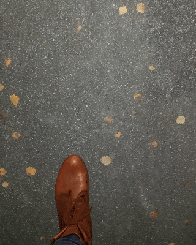

grü
nin
gen

zü
rich





a
bout
grüningen – zürich – eifach dokumentiert meinen weg von zuhause zur schule. die einzelnen viewports zeigen verschiedene arten der wahrnehmung. // intro . die verschiedenen bodenbeläge . verhältnis der grünfläche zu der asphaltierten fläche . gerüche . geräusche . visuelle wahrnehmung
im
pres
sum
© stfffchs . stephanie.fuchs@stud.sfgz.ch
Grids and Modules . HF IAD 2017-2020
Schule für Gestaltung Zürich . januar 2018